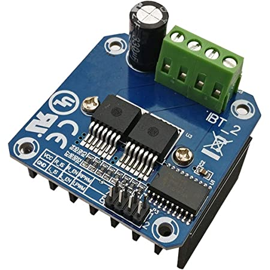
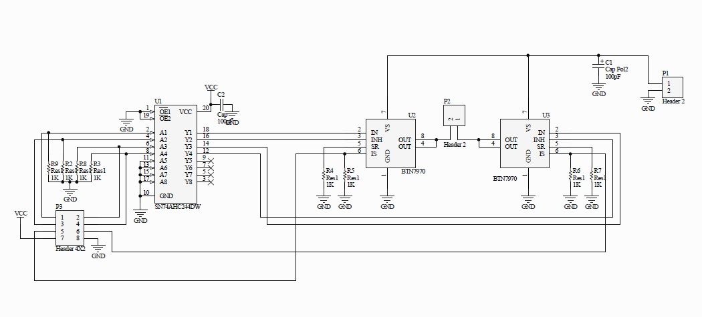

IBT_2 BTS7960 Motor Board¶

Engineer Level
See the Parts List (IBT_2)
{kind=link}
What You Will Need (IBT_2)¶
An Arduino Mega or clone (or an Uno if you don’t need WiFi or Ethernet)
An Arduino Motor Shield (or another board for your service track for the upgrade option)
An IBT_2 Motor Board (1 board for the upgrade option, 2 for the replace option)
Version 3.1.0 or later of the DCC++ EX Command Station Software
10k or a even a 1k Resistor (Optional)
Some Jumper Wires
For this option, we assume that many of you may have started off with the Arduino Mega with Arduino Motor Shield (or clones) and are here because you are making the step up to something that can handle more current, and therefore more locos. We will cover two options for how to use your IBT_2 motor board:
“Upgrade” - Using ONE output of your Arduino Motor Shield to control your PROG track and ONE IBT_2 board to run your MAIN track.
“Replace” - Using TWO IBT_2 boards to handle BOTH the MAIN and PROG tracks. You won’t need another motor controller. This is a Tinkerer or perhaps an Engineer option since it requires a little more knowledge and abilities.
Note
We can’t say it enough, this board can pump out some Amps. Be careful! Put fuses on the connection to each rail and limit the current to a safe level in your config.h file. We have a saying at DCC-EX, if you need more than 5 Amps to run locos, then you need to add power districts, not more Amps. The voltage to the track will be 2 to 3 volts higher using the same power supply than it is with Arduino type (L298) motor boards.
The IBT_2 uses N-Channel Power MOSFETS (a type of Transistor) inside its 2 BTS7960B Integrated Circuits. Each of those ICs makes is just a half H-Bridge circuit, it takes two of them to make the full H-Bridge. Don’t be confused, each of these boards can only handle one track. The Arduino board is a DUAL full H-Bridge, that is how it can handle 2 tracks.
Anything with MOSFETS in them is more efficient than something with Bipolar Junction Transistors (BJTs) like the L298 on the Arduino and Deek Robot Motor Shields. That means there is no voltage drop to the tracks like there is for those boards. Keep that in mind because that means there can be an extra 2 to 3 volts to your track. Your trains will run faster than they did before and things could overheat if they were able to handle the 12V reaching the track from a 14.5V power supply, but don’t like the full 14+ volts.
Which Option Should You Choose? (IBT_2)¶
Note
These options both use the “standard accuracy” waveform (This means the 1 and 0 pulses can vary a tiny bit from their 58 and 116uS duration). This is not a problem for virtually all decoders and would usually only be noticed by a sniffer checking the signal for accuracy (Like DCCInspector-EX). We use 2 GPIO pins to generate the DCC signal. This saves you from having to create a small 1 transistor and 2 resistor inverter circuit to only use 1 pin. If you want to use “high accuracy” mode because you need to free an Arduino pin or some other reason, and you like to solder, please see High Accuracy Waveform Mode
Upgrade (IBT_2)¶
The main benefit of using the upgrade option, keeping the Arduino Motor Shield for programming and adding the IBT_2 for providing more current for your MAIN track, is that you already have a working system for programming, and therefore need to make fewer changes. The other reason is that current sensing for programming requires more sensitivity that simply being able to detect a short condition, which is all you need on MAIN.
The circuitry on the Arduino Motor Shield is designed to measure current from just 0 to 2 Amps in the 1023 steps of the analog input pin of an Arduino Mega (it has a 10 bit analog-to-digital converter (ADC)), and 10 bits can hold an integer from 0 to 1023). Measuring 5 or 10 amps in the same number of steps obviously means a loss of resolution. This is not necessarily a bad thing, but is worth noting.
It would be possible to just use fuses to both rails of your MAIN track to protect for shorts on the track and not have to have an external current sense board as long at you also had protection in your power supply to protect against a short in the board itself. Just note that without a current sense board, the Command Station would not be able to automatically turn off power to the board in the event of a short and current monitoring, like in the JMRI DCC++ monitor, will not report main track current.
Replace (IBT_2)¶
The main benefit of the replace option, using 2 IBT_2 boards, is that you don’t have to have two different types of boards. If you are building a new CS and don’t already have an Arduino Motor Shield, you will need two of the IBT_2 boards.
To use this option and be able to program locos, you must have an current sense capability. These boards do have a current sense output, but you may want to modify that or use an external current sense board. We will cover more about that later. Accurate current sense lets you detect the acknowledgement (ACK) pulses from a loco on your programming track. It also allows the CS to monitor for a short and automatically cut the power to the tracks if there is an overload condition (a short).
Upgrading (Use the Arduino Motor Shield AND the IBT_2)¶
For this installation we are going to assume you already have a working CS or at least have all the parts you need as listed above.
If you need instructions on how to install the Arduino Motor Shield, see Arduino Motor Shield Assembly
What We Are Going To Do (Upgrade)¶
Use just 1 output of your existing Arduino Motor Shield for your program track with no hardware changes
Add an IBT_2 (BTS7960) Motor Board to replace the “A” output of the motor shield to power your MAIN track
Move a few wires and connect a few jumpers to your IBT_2
Optionally add a current sense resistor to the IBT_2
Change your motor board type in your config.h file
Warning
Instead of bending out the current sense pin of the Arduino Motor Shield and using the same A0 pin for the IBT_2 current sense, we are using pin A5. Both outputs of the motor shield are still connected, we just don’t enable the A or main side. DO NOT try to use the A output of the motor shield! You will have no current sense and no short circuit protection.
Steps (Upgrade)¶
Make sure all power supplies are disconnected from your Arduino, The Motor Shield, and the IBT_2
Disconnect the wires coming out of output A of the Arduino Motor Shield that normally connect to your MAIN track.
Move the two wires we just disconnected from the motor shield and connect them to the M+ and M- Screw terminals of the IBT_2. If you will be using power districts or wanting to connect the main and prog tracks together when prog is not in use, keep the polarity of the rails the same with reference to each other. In other words, if you connect + to the left rail, then always keep + on the rail to the left as viewed from a train sitting on the track. We need to keep the phase of the DCC signal in sync between power districts.
Option - You may need to connect or solder a 10k or smaller resistor between pin 5 or 6 and ground on the IBT_2 (shown as R1 in Figure 1). There is already a 10k resistor on each chip, which gives us a resistance of 5k when we connect both current sense outputs together. See the notes below for more detail about current sense and a suggestion for using an external current sense board.
The diagrams below also show an optional diode protection circuit. If you don’t test your board first to make sure that the current you will be using does not put more that 5V on your Arduino analog pin, this will keep you from destroying the input. It is a 5 or 5.1 zener diode (1N4733A, 1N5231B, NZX5V1B, BZX55C5V1, etc.). R2 can be whatever you have on hand. We recommend 2k - 10k.
Select your IBT_2 board in the config.h file.
Upload the new sketch to your Arduino Mega
Use the following diagrams to connect pins from the Arduino Mega to the IBT_2:
Arduino |
IBT_2 |
|---|---|
4 (enable) |
3,4 (R_EN, L_EN) |
5 (signal 1) |
2 (LPWM) |
6 (signal 2) |
1 (RPWM) |
A5 (CS MAIN) |
5,6, R1a (R_IS, L_IS, R1a) |
5V |
7 (Vcc) |
GND |
GND, R1b |
Table 1 - Wiring diagram
Here is a visual diagram. R1 (current sense modifier), R2 (diode current limiter) and D1 (5.1V Zener protection diode) are optional. See current sense notes below. Click to enlarge:
{kind=link}
It should look like following. Note we have included the Arduino Mega and have the Arduino Motor shield off to the side for reference. The motor shield would obviously normally be stacked on top of the Arduino. However, some people might not use the motor shield and instead will have another board to use for their programming track. In this case, they would connect the IBT_2 to the same pins directly on the Arduino microcontroller. Also note the jumper wiring that shows pin 4 or the Arduino connecting to pins 3 and 4 on the IBT_2 and A5 connected to pins 5 and 6. As with most of our diagrams, you can click on them to enlarge them.
{kind=link}
Note
We are going to edit your config.h file. If this is your first time using the Command Station software and you do not have a config.h file, rename your config.example.h file to config.h.
Launch the Arduino IDE (or whatever editor you use) and open the CommandStation-EX project. Find the config.h file. look for the following lines of code:
// DEFINE MOTOR_SHIELD_TYPE BELOW ACCORDING TO THE FOLLOWING TABLE:
//
// STANDARD_MOTOR_SHIELD : Arduino Motor shield Rev3 based on the L298 with 18V 2A per channel
// POLOLU_MOTOR_SHIELD : Pololu MC33926 Motor Driver (not recommended for prog track)
// FUNDUMOTO_SHIELD : Fundumoto Shield, no current sensing (not recommended, no short protection)
// IBT_2_WITH_ARDUINO : IBT_2 Motor Board on MAIN and Arduino Motor Shield on PROG
// FIREBOX_MK1 : The Firebox MK1
// FIREBOX_MK1S : The Firebox MK1S
// |
// +-----------------------
//
#define MOTOR_SHIELD_TYPE STANDARD_MOTOR_SHIELD
Change the last line to look like this. To be sure of your spelling, you can copy and paste IBT_2_WITH_ARDUINO to replace STANDARD_MOTOR_SHIELD
#define MOTOR_SHIELD_TYPE IBT_2_WITH_ARDUINO
Upload the sketch to your arduino. If you need help on how to upload a sketch, see Getting Started
Please see Important Notes on Current Sensing (IBT_2).
Replacing (Using One IBT_2 for MAIN and another for PROG)¶
This section will cover how to use 2 IBT_2 boards, one for MAIN and one for PROG if you do not already have an Arduino Motor Shield or clone. Be careful as the IBT_2 can deliver much more current than you need for a programming track. If you install 1 Amp fuses in between the IBT_2 outputs and both rails of your programming track, that and the lower trip current we set in the CS for the programming track should protect your layout.
What We Are Going to Do (Replace)¶
Use Two (2) IBT_2 (BTS7960) Motor Boards to run your MAIN and PROG tracks
Use jumper wires to connect the IBT_2 to the Arduino and the IBT_2 outputs to your tracks
Optionally add current sense resistors to the IBT_2
Change your motor board type in your config.h file
Warning
You will need some form of current sense if you wish to program locos and detect overload conditions (short circuit) on your tracks.
Steps (Replace)¶
The same rules as above apply to using 2 boards. The only difference is that we would use one IBT_2 board for Main and another for PROG. That wiring would look like this:
Please see Important Notes on Current Sensing (IBT_2).
TODO: Fritzing image of 2 ibt 2 boards here
Use the following diagrams to connect pins from the Arduino Mega to the IBT_2 for your MAIN track:
Arduino |
IBT_2 MAIN |
|---|---|
4 (enable) |
3,4 (R_EN, L_EN) |
5 (signal 1) |
2 (LPWM) |
6 (signal 2) |
1 (RPWM) |
A5 (CS MAIN) |
5,6, R1a (R_IS, L_IS, R1a) |
5V |
7 (Vcc) |
GND |
GND, R1b |
Use the following diagrams to connect pins from the Arduino Mega to the IBT_2 for your PROG track:
Arduino |
IBT_2 PROG |
|---|---|
11 (enable) | 3,4 (R_EN, L_EN) |
|
12 (signal 1) | 2 (LPWM) |
|
13 (signal 2) | 1 (RPWM) |
|
A4 (CS MAIN) |
5,6, R1a (R_IS, L_IS, R1a) |
5V |
7 (Vcc) |
GND |
GND, R1b |
Important Notes on Current Sensing (IBT_2)¶
Warning
Make sure your board has the expected current sensing resistors (see below) and that their value is correct for the maximum current you expect to use. Also, make sure you don’t apply more than 5V to the Arduino Analog pin. Our calculations use NOMINAL values, but these chips can vary widely in how much voltage they report per Amp of current at the output. The value of your resistor will also affect this.
Please do the following to ensure you won’t damage the Arduino, your layout, or yourself:
Test your board to see what voltage it reports for 2 or 3 different currents and extrapolate to make sure that at your required current, example 5A, to CS output does not produce more than 5V.
Use a 5.1V zener diode (D1) and current limiting resistor (R2). This would normally be a 5k Ohm resistor but can be anything from 270 to 10k. The Diode can be 5V or 5.1V like a 1N4733A, 1N5231B, etc. Note that after 3.5V the response is no longer linear when using the diode, so you you may want to design your system to output its range between 0 and 4V and use 5V as the over limit setting.
Check your board for at least 2 resistors that are labeled “103”, you will need a magnifier or to take a picture with your phone and zoom in. 103 = 10k (10 followed by 3 zeros). These are the second from the left resistor in each bank of 4 (R5 and R6). See Figure 3. When we tie the two CS outputs together, that gives us 5k of resistance from which to measure a voltage drop and convert that to current. If you added another 10k resistor (R1) in parallel with the others, that would give you 3.3k which reduces the voltage to the Arduino analog pin to be able to measure higher currents.
Put a 5A fuse on each output leg going to your track.
{kind=link}
The spec sheet of the BTS7960B states that the “expected” (aka nominal) value for the ratio of output current to the current reported at the current sense pin is 8500 to 1. That means if you have 1 Amp of output current you will get .176 mA of current at the CS pin. If we apply that through our 5k of resistance (V = I*R) we would see .588 Volts at the output connected to our Arduino analog pin. Since the response is linear, we get .588 Amps per Volt. If we have 3A of current to the track, we would have 1.75V. And for 5 Amps, the voltage would be 2.94V. So far, so good, BUT, the tolerance and difference between what is “expected” and what will pass as “acceptable” is huge. The 8500 ratio we expect can be as low as 3000 and has high as 14,000! This means that a 3A current can be reported as anything from 1V to 5V on the CS pin. But what happens at 5A on one of these boards? The answer is that you could have as much as 8.33V connected to your Arduino! In other words, You could destroy the analog input pin on your Arduino.
Warning
If you are going to use more than 3 Amps, you should add a 10k or less current sense resistor (R1) and a 5V Zener diode and series resistor protection circuit (D1 and R2). See the section above “Important Notes on Current Sensing”. An additional 10k resistor would give you .392 Volts per Amp and will require a small change to your sketch to adjust your current conversion factor (usually a value of 10). A 2.2k resistor would allow you to measure up to 10A, but the larger the current range, the less sensitivity and accuracy you can get. Besides, we should use boosters and power districts if we need more than 5 Amps, right? ;)
Modifying Your Motor Board Definition To Give The Correct Current Sense Factor¶
If you add a parallel resistor to increase your current sensing range or find your readings are not correct, you will need to adjust your current sense factor. For an unmodified board, a value of 7 is usually good. If you add a 10k parallel resistor to get more current range, you probably need to change it to 10. If you can test with known resistance values to know exacly what voltage it reported to your analog pin for 2 or more currents, you can use a simple formulat to calculate it. Everything you need to create your own motor board defintion is here:
Using External Current Sense¶
Using an external current sense board instead of the onboard current sense included with the IBT_2 can give us a little more control over the sensitivity of our circuit (ability to read low currents such as one N scale loco sitting still on the track. Circuits and boards we tested are the MAX471 (up to 3A), the Pololu ACS724 (5A or 10A boards), and a 5A current sense transformer for use with one output wire wrapped through it going directly to the track.
*TODO: Add help or point to a section for external current sense boards*
Parts List (IBT_2)¶
Mean Well LRS-150-15 Enclosed Switchable Power Supply 1U Profile, 150W 15V 10A http://amazon.com/gp/product/B019GYOPSS/ $23.38 +tax; prime shipping
ELEGOO MEGA 2560 R3 Board ATmega2560 ATMEGA16U2 + USB Cable https://www.amazon.com/gp/product/B01H4ZLZLQ $16.99 +tax; prime shipping
ACS724 Current Sensor Carrier 0 to 10A (this one has 400mv/A sensitivity) https://www.pololu.com/product/4042 $9.95 + $3.95 shipping
DuPont pin M/F jumper wires 20cm – an assortment is fine https://www.amazon.com/dp/B07GD2BWPY $5.79 +tax; prime shipping
Single Motor Driver Board H-Bridge IBT_2, 3-36V, 15A, Peak 43A various sellers, prices and delivery methods. $7 to $14. Here is a pack of two: https://www.amazon.com/BTS7960-Driver-Module-Arduino-Current/dp/B07TFB22H5/ref=asc_df_B07TFB22H5/?tag=hyprod-20&linkCode=df0&hvadid=366016835942&hvpos=&hvnetw=g&hvrand=9794586518900556692&hvpone=&hvptwo=&hvqmt=&hvdev=c&hvdvcmdl=&hvlocint=&hvlocphy=9009681&hvtargid=pla-790247286209&psc=1&tag=&ref=&adgrpid=80266838630&hvpone=&hvptwo=&hvadid=366016835942&hvpos=&hvnetw=g&hvrand=9794586518900556692&hvqmt=&hvdev=c&hvdvcmdl=&hvlocint=&hvlocphy=9009681&hvtargid=pla-790247286209 $15.51 +tax; prime shipping
Tech Notes (IBT_2)¶
Motor Board Definitions (IBT_2)¶
The choice of motor driver is set in the config.h file. It is set in the following line:
#define MOTOR_SHIELD_TYPE [Motor Board Type]
The default is “STANDARD_MOTOR_SHIELD” For Arduino and clone shields.
If you want to change your motor shield or create a definition for one that does not yet have built-in support, you can follow the simple instructions in the Motor Board Config Section
For the Engineers, the defintions and implementation for motor board control are in the following files:
MotorDrivers.h - Contains the definitions for all the currently supported motor boards MotorDriver.h - Creates the “MotorDriver” C++ class that defines the data type for a motor controller MotorDriver.cpp - The routines that control the operation of a motor controller (Power, Current Sense, etc.)
Normally you would never need to get into these files, we just mention them because it can be helpful to see the examples in the code if you want to learn more about how to customize your motor board definition or see how things work.
IBT_2 schematic¶
Below is a link to the IBT_2 schematic. Click to enlarge.
{kind=link}
Below is the Handson Technology datasheet, recommended reading for Tinkerers and Engineers
Handson Technology BTS7960 High Current 43A H-Bridge Motor Driver
TODO: this has to go somewhere: There are two ways to monitor motor board current, one is at the input of the board and the other is at the output. We will cover both of these methods in the Important Notes on Current Sensing section.
Also, mention “high accuracy mode” and include the circtuit for that.
Updated June 30, 2021